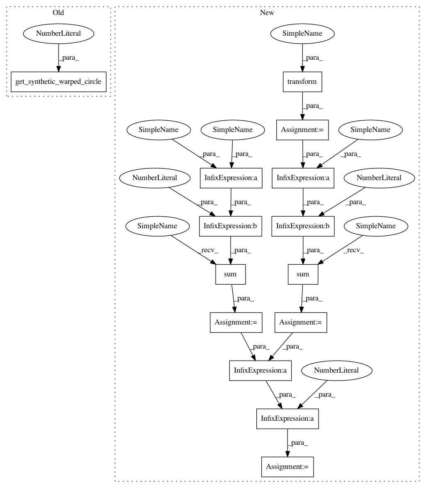

c7c80b8429ab70ea3b4d17451eac9cd5020e68a8,dipy/align/tests/test_imwarp.py,,test_cc_2d,#,664
Before Change
matches the saved one.
"""
moving, static = get_synthetic_warped_circle(1)
//Configure the metric
sigma_diff = 3.0
radius = 4
metric = metrics.CCMetric(2, sigma_diff, radius)
After Change
m = optimizer.get_map()
assert_equal(mapping, m)
warped = mapping.transform(moving)
starting_energy = np.sum((static - moving)**2)
final_energy = np.sum((static - warped)**2)
reduced = 1.0 - final_energy/starting_energy
assert(reduced > 0.9)
In pattern: SUPERPATTERN
Frequency: 3
Non-data size: 14
Instances
Project Name: nipy/dipy
Commit Name: c7c80b8429ab70ea3b4d17451eac9cd5020e68a8
Time: 2015-12-16
Author: jomarocegueda@gmail.com
File Name: dipy/align/tests/test_imwarp.py
Class Name:
Method Name: test_cc_2d
Project Name: nipy/dipy
Commit Name: c7c80b8429ab70ea3b4d17451eac9cd5020e68a8
Time: 2015-12-16
Author: jomarocegueda@gmail.com
File Name: dipy/align/tests/test_imwarp.py
Class Name:
Method Name: test_em_2d_gauss_newton
Project Name: nipy/dipy
Commit Name: c7c80b8429ab70ea3b4d17451eac9cd5020e68a8
Time: 2015-12-16
Author: jomarocegueda@gmail.com
File Name: dipy/align/tests/test_imwarp.py
Class Name:
Method Name: test_cc_2d
Project Name: nipy/dipy
Commit Name: c7c80b8429ab70ea3b4d17451eac9cd5020e68a8
Time: 2015-12-16
Author: jomarocegueda@gmail.com
File Name: dipy/align/tests/test_imwarp.py
Class Name:
Method Name: test_em_2d_demons